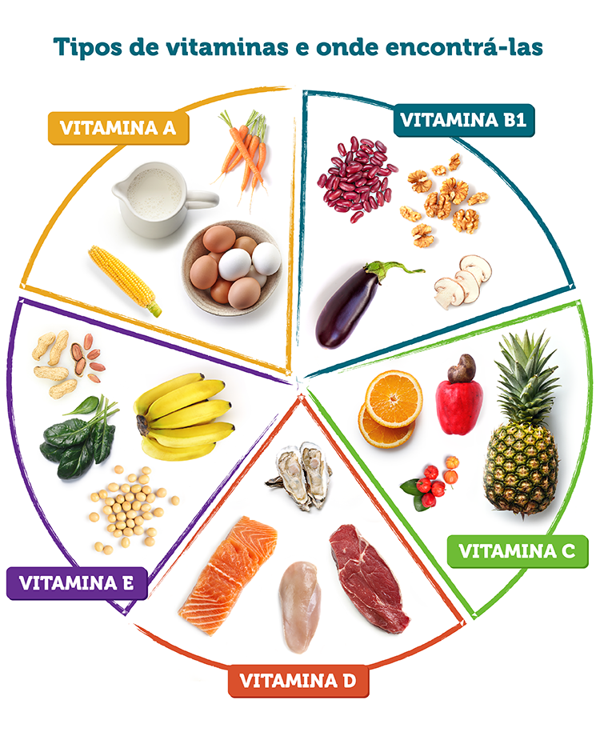
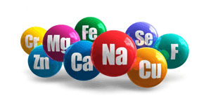

.png)
Macro nutrientes são os que existem em maior quantidade nos alimentos e produtos alimentícios, dentre eles estão os carboidratos, proteínas, gorduras e água. Micro nutrientes são os que existem em menor quantidade, dentre os eles estão as vitaminas e os sais minerais.
Água, é o componente mais abundante de nosso corpo, tanto que é 70% dele. Ele é formador de todos os órgãos, sangue, músculos e inclusive das células corporais. O recomendável para todos os seres humanos terem um bom funcionamento é de 40ml de água por kilograma corporal, por exemplo: eu tenho 55 kg, terei que multiplicar 40 por 55. Com isso obterei o resultado em ml do quanto é necessário para mim em um dia, cerca de 2200ml que convertido para litros dá 2,2l e a cada 20 minutos de exercícios devo ingerir em média de 100 a 300ml de água.
Carboidrato, é a maior fonte de energia da alimentação, porque todo carboidrato quando digerido vira glicose (fonte de energia) no nosso corpo. Existem níveis de velocidade que o carboidrato vira glicose no sangue e é medido pelo índice glicêmico e carga glicêmica. O índice glicêmico (IG) é classicado em baixo (≤55), médio (de 56 a 69) ou alto (>70). Já a carga glicêmica é o efeito de um total de carboidratos na glicemia. Por um exemplo, o açúcar refinado tem o IG de 92 (alto) e a aveia de 55 (baixo). Logo a aveia é mais saudável ao nosso organismo, pois quanto maior o IG do carboidrato mais prejudicial á saúde é. O recomendável para um indivíduo que deseja ter energia para o dia todo, deve consumir pelo menos 5 gramas por kilograma corporal, de preferência com o menor IG possível.
As proteínas são constituidas de 20 aminoácidos que formam-as. Os 20 aminoácidos são divididos em dois grupos, os essenciais e os não essenciais, 8 essenciais e 11 não essenciais. Os essenciais detém este nome pelo fato de que nosso corpo não é capaz de produzir, ou seja, devemos buscá-los através de nossa alimentação, são eles: isoleucina, leucina, lisina, metiotina, fenilalanina, treotina, triptofano e valina. Já os não essenciais são os que nosso organismo é capaz de produzir, são eles: serina, alanina, cisteína, prolina, aspartato, asparagina, glutamato, glutamina, arginina, tirosina e glicina. É recomendável consumir por dia de 1 a 1,5 gramas de proteínas por kilograma corporal, vale salientar que quase todas fontes de proteínas são ricas em pelo menos um aminoácido.
Extra: A creatina é um composto de aminoácidos (glicina, arginina e metiotina) e atua nos tecidos musculares e no cérebro.
As gorduras (lipídeos) tem a função de fornecer e reservar energia e de isolar a temperatura. Também constituem nossas células, garantem o bom funcionamento de nossos hormônios, formam cerca de 60% do cérebro e é a principal fonte de energia do coração (gordura saturada). Tipos de gorduras: saturadas, monoinsaturadas, poli-insaturadas e trans. Grande parte das gorduras saturadas são encontradas em animais. As gorduras monoinsaturadas apresentam-se em azeites de oliva, óleos vegetais (canola, girassol), abacate e amêndoas no geral, mas nenhuma destas fontes de gordura pode-se aquecer, pois em temperaturas elevadas elas são oxidadas e prejudicam á saúde. Gorduras poli-insaturadas são ômega-3 e ômega-6, encontradas em suma maioria em peixes, nozes e linhaça. Todas as gorduras acima se consumidas com moderação são benéficas ao corpo, somente a trans que aumenta o colesterol ruim (LDL), altamente cancerígena e é encontrada em biscoitos, óleos vegetais e tudo que usa-se destes óleos como ingrediente. O recomendável de ingestão de gorduras boas por dia é de 0,25 a 0,4 gramas por kilograma corporal.
As vitaminas são substâncias essenciais para nosso corpo, que não é capaz de produzir. Classifica-se em lipossolúveis e em hidrossolúveis. As lipossolúveis são absorvidas através de gorduras e representam as vitaminas A,D,E e K. Contudo as hidrossolúveis necessitam de água para sua absorção e corresponde as vitaminas do complexo B (B1;B2;B3;B5;B6;B8;B9;B12) e a vitamina C. Nosso organismo precisa de vitaminas para metabolizar carboidratos, proteínas, gorduras e sais minerais. Exemplo: elas servem como um pedreiro, nosso corpo é a casa e os macro nutrientes e os minerias são os materiais. Pois as vitaminas colocam cada coisa em seu devido lugar e auxilia a exercer sua função. Os sais minerais desempenham inúmeras funções em nosso organismo e são tão importantes quanto as vitaminas. Compõem os sais minerais o ferro, iodo, cálcio, fósforo, sódio, potássio, magnésio, etc... O ferro é fundamental para o sistema respiratório, iodo para o crescimento e metabolismo, cálcio para ossos e dentes, o fósforo participa em contrações musculares (ATP,ADP e AMP), o sódio regula o volume sanguíneo, tem papel importante nos impulsos nervosos e nunca deve-se extinguir o sódio da dieta, o potássio fornece um funcionamento adequado de todas as células, tecidos e órgãos do corpo humano e por último o magnésio, ele promove o desenvolvimento de ossos, tecidos e músculos.
 Essa foi uma explicação resumida sobre praticamente tudo que ingerimos em nosso dia-a-dia, o que cada alimento têm e o que proporciona ao nosso corpo em geral, agora quando você olhar uma tabela nutricional saberá pelo menos o básico do que cada componente ali listado faz em seu corpo.